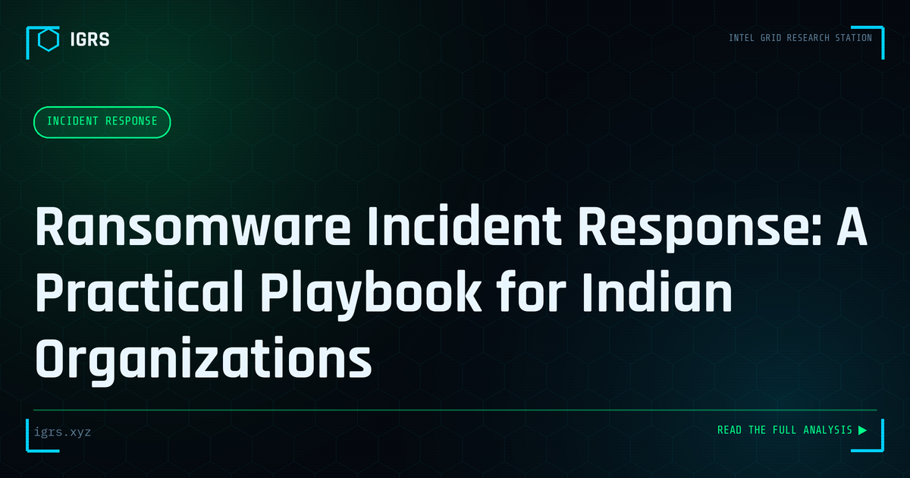

Ransomware Incident Response: A Practical Playbook for Indian Organizations
| File No. | IGRS-020/2026 |
| Subject | Step-by-step ransomware IR guide calibrated for Indian regulatory and operational context |
| Category | Incident Response |
| Author | Manuj Kumar Pandey |
| Published | 2026-04-20 |
| Reading time | 12 minutes |
Ransomware attacks on Indian organizations have tripled in the past two years. The first 48 hours of response determine whether the organization recovers cleanly or pays.
Ransomware Incident Response: A Structured Approach
When ransomware strikes, the quality of the incident response determines whether an organisation recovers quickly or suffers catastrophic, prolonged damage. A structured, practised incident response framework is the difference between a managed crisis and chaos. This guide provides a comprehensive ransomware incident response methodology for Indian organisations, aligned with CERT-In requirements and the DPDP Act.
The Incident Response Lifecycle
| Phase | Objective |
|---|---|
| Preparation | Plans, backups, tools ready before an incident |
| Detection | Identify the ransomware quickly |
| Containment | Stop the spread |
| Eradication | Remove the threat |
| Recovery | Restore operations |
| Lessons learned | Improve defences |
Phase 1: Detection and Initial Assessment
Rapid detection limits damage. Indicators include encrypted files with unusual extensions, ransom notes, systems becoming inaccessible, and security tool alerts. The initial assessment determines the scope — which systems are affected — and identifies the ransomware strain, which informs the response. Speed here is critical, as ransomware spreads rapidly across networks.
Phase 2: Containment
Containment stops the spread before it engulfs the entire environment:
- Isolate infected systems from the network immediately
- Do NOT power off — preserve volatile memory and potential keys
- Disable network shares and propagation paths
- Preserve a RAM dump from infected systems
- Identify and isolate patient zero
Phase 3: Mandatory CERT-In Reporting
Under CERT-In directions, the incident must be reported within 6 hours of detection via incident@cert-in.org.in or 1800-11-4949. This is a legal obligation, not optional. Simultaneously, assess whether personal data was exfiltrated, triggering DPDP Act breach notification requirements to the Data Protection Board and affected individuals.
Phase 4: Investigation and Eradication
The investigation identifies the strain (via ID Ransomware), checks for free decryptors (No More Ransom), determines the initial access vector through log analysis, and assesses what data was accessed or stolen. Eradication then removes the ransomware and closes the entry point — whether a phishing email, exposed RDP, or unpatched vulnerability — to prevent reinfection.
Phase 5: Recovery Decision
The recovery approach prioritises avoiding ransom payment:
- Check No More Ransom for a free decryptor
- Restore from offline, immutable backups
- Rebuild systems from known-good images where needed
- Engage CERT-In assistance
- Treat payment as an absolute last resort with full awareness it may not work
The Double Extortion Complication
Modern ransomware exfiltrates data before encrypting, then threatens to leak it. This means backups alone do not resolve the threat — the stolen data remains a liability. For Indian organisations, exfiltrated personal data is a reportable breach under the DPDP Act regardless of whether systems are restored. The investigation must determine what data left the network, as this drives both the legal response and the negotiation dynamics.
Preserving Evidence During Response
Even amid the crisis, evidence preservation matters for later prosecution and insurance claims. Preserve memory dumps, ransom notes, encrypted file samples, relevant logs, and the timeline of events, with hash values and Section 63 BSA certification. This evidence supports law enforcement investigation, any insurance claim, and the lessons-learned analysis.
Communication and Coordination
Effective incident response requires clear communication: internal stakeholders need updates, CERT-In and possibly the Data Protection Board must be notified, customers may need notification under DPDP, and if cyber insurance exists, the insurer must be engaged early. A predefined communication plan prevents the confusion that compounds technical chaos during a ransomware crisis.
Post-Incident: Lessons Learned
After recovery, a thorough post-incident review extracts lessons: how did the attacker gain entry, what allowed spread, what worked and what failed in the response, and what improvements are needed. This review should produce concrete actions — patching gaps, improving backups, enhancing detection, updating the response plan — that strengthen resilience against the next attack.
Building Ransomware Readiness
The best incident response is enabled by preparation: maintained offline immutable backups, a tested incident response plan, EDR and monitoring, network segmentation, and regular drills. For Indian organisations, building this readiness — combined with awareness of the 6-hour CERT-In reporting requirement and DPDP breach obligations — transforms ransomware from a potential extinction event into a serious but survivable incident. Preparation is the single greatest determinant of how an organisation fares when ransomware inevitably comes.